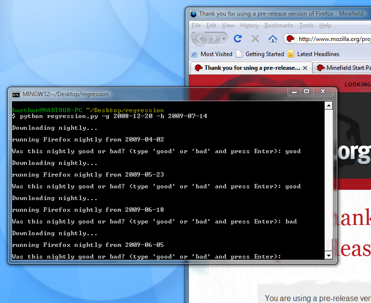

Install
Mozregression is a Python package, so you'll need setuptools or pip to install. If you're on Windows you can just install MozillaBuild which comes with setuptools (run C:\mozilla-build\start-l10n.bat to get the command line). After installing setuptools, you can install mozregression:
easy_install mozregression
How To Use
Let's say you just found a bug in the current nightly build and you know that bug didn't exist in the nightly from a few months ago. To find the regression range of this bug (the window of commits the bug was introduced in), run the mozregression command and give it a known "good" date with the good argument:
mozregression --good=2010-03-16You can also specify the most distant known "bad" nightly date with the
bad argument.
mozregression --good=2010-03-16 --bad=2010-09-08
This will guide you through a bisection, downloading and opening nightly builds from various dates and asking you whether the bug exists in them. After a few iterations you'll get the regression range, something like this:
Last good nightly: 2010-09-08 First bad nightly: 2010-09-09 Pushlog: http://hg.mozilla.org/mozilla-central/pushloghtml?fromchange=36f5cf6b2d42&tochange=8e0fce7d5b49
{kind=link}
There's also a sister script, moznightly that will just download and run a nightly from a particular date:
moznightly --date=2010-07-23